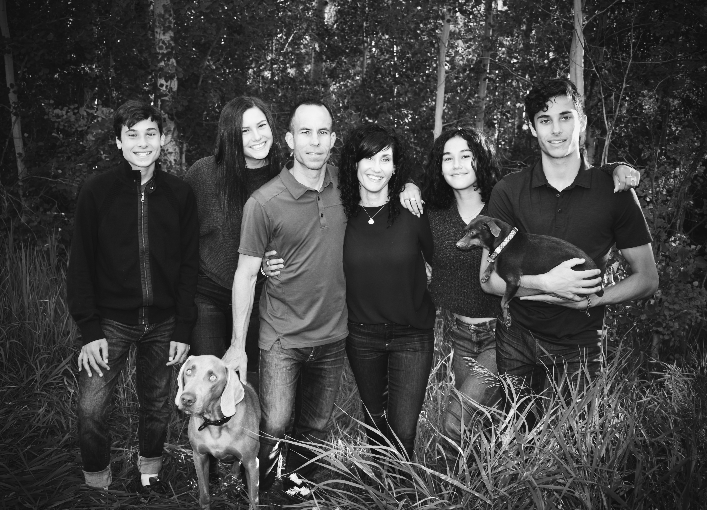
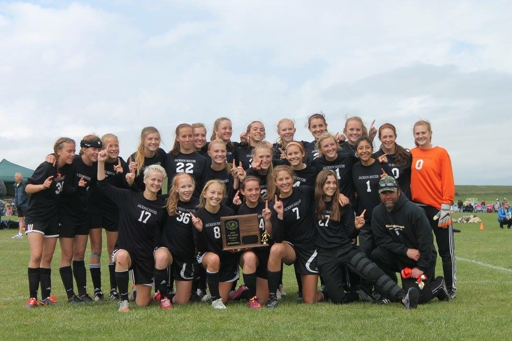
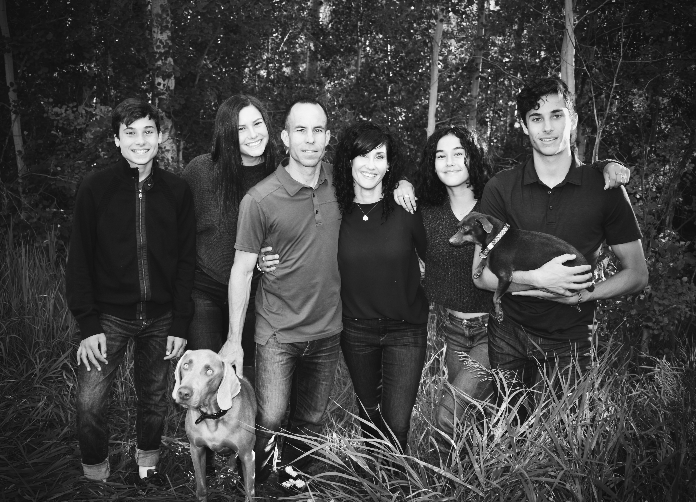
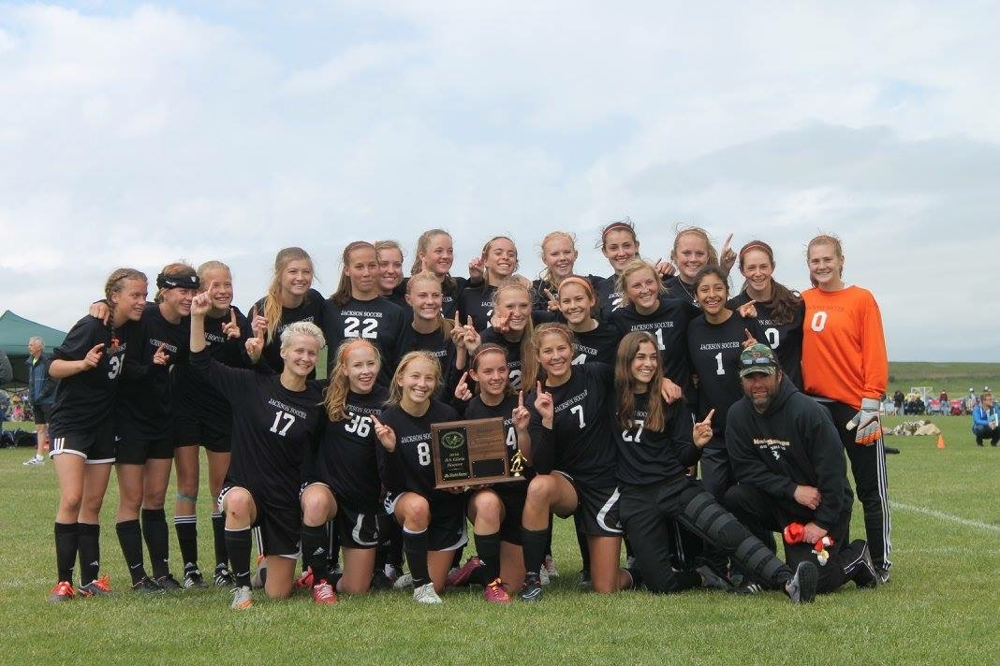

I'm a senior in the Experience Design and Management program at BYU Marriott School of Business. Most people haven't heard of my major (which is completely fine), so here's a quick summary. Through ExDM, I have learned how to create and manage impactful experiences for stakeholders and how to apply those practices into a variety of career paths. If you would like to learn more, please click here.
Aside from my education, experiences play a huge role in my life. I strongly believe experiences enhance our lives, and the same goes for businesses. A few of my favorite experiences are skiing in my home Teton Mountain Range, my study abroad in London, hiking with friends, playing soccer with anyone willing to, and full blown movie nights with family.
I love staying active in my social life, physically, educationally, and in my work. I thrive in environments where the work requires creativity and everyday is a little bit different. I feel the same joy from accomplishing a challenging task as I do from skiing in deep powder (which is a lot of joy).